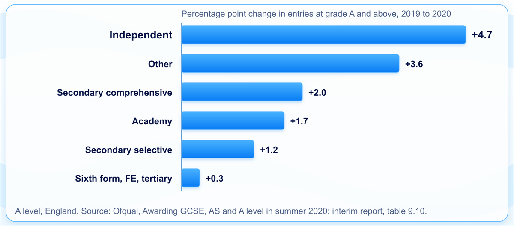

AI governance and guardrails
Keep an automated decision lawful, fair and open to challenge, by designing the controls in from the start.
You'll come away with:
- What the 2020 A level grades show about testing a model for fairness
- What the UK GDPR has required of automated decisions since February 2026, and what makes human review meaningful
- Which government standards and guidance apply to AI in departments, and which of them are mandatory
- How to design review, challenge, monitoring, fallback and audit into an AI supported service
Guardrails are the controls and design choices that keep an automated decision lawful, fair and open to challenge. In government they rest on law as well as guidance, and they belong in the design from discovery, alongside security and accessibility.
The 2020 grades: a model that passed its fairness checks
With exams cancelled in 2020, schools and colleges in England submitted a centre assessment grade and a rank order for every A level student. Those grades were then standardised with a statistical model, chosen by Ofqual and applied by the exam boards, that predicted each centre's results from its results in earlier years, adjusted for the prior attainment of this year's students. Ofqual's interim report, published on results day, showed that 39.1% of A level grades had been adjusted down from what the school submitted, almost all of them by one grade.
The model had been tested. Ofqual chose it partly because it did not systematically affect groups of students with particular protected characteristics, and its equalities analysis found no evidence that the process had introduced bias. The trouble came from a rule the analysis was not looking at. Because no statistical model can reliably predict grades for very small groups, the model put more weight on the teachers' grades where a centre's cohort in a subject was small, fewer than 15 students across this year's entry and the historical data. Those grades had generally been optimistic. At independent centres the share of entries at grade A and above rose 4.7 percentage points on 2019, against 2.0 at secondary comprehensives and 0.3 at sixth form, FE and tertiary colleges. Ofqual's chair later told the Education Committee that the inability to standardise small cohorts gave an advantage to private schools.

Four days after results day, Ofqual announced that students would receive their centre assessment grade, or the calculated grade if that was higher. Its statement said the approach had caused real anguish and damaged public confidence, and that expecting schools to submit appeals had placed a burden on teachers.
The model used statistics rather than machine learning. The lessons carry over anyway, because they apply to any algorithmic tool that shapes a decision about a person. Test outcomes across the proxies a design can introduce as well as the protected characteristics, and give each person a route to challenge that does not depend on someone else finding the time. Those are guardrails, and they are cheapest to build at the design stage.
A fairness test only finds the unfairness someone thought to look for.
What the law asks of an automated decision
Since 5 February 2026, section 80 of the Data (Use and Access) Act 2025 has replaced Article 22 of the UK GDPR with Articles 22A to 22D, under the commencement regulations. The new articles turn on two definitions. A decision is based solely on automated processing if there is no meaningful human involvement in taking it. It is a significant decision if it has a legal effect on the person, or a similarly significant effect.
Article 22B restricts solely automated significant decisions in two cases. The first is where the decision uses special category data, such as health or ethnicity, unless the person has given explicit consent or the decision is necessary for a contract, or required or authorised by law, and a substantial public interest condition applies. The second is where the processing relies on the recognised legitimate interests lawful basis. Outside those cases a significant decision can be solely automated, but Article 22C requires safeguards. They must include measures that:
- give the person information about decisions taken about them
- let them make representations about those decisions
- let them obtain human intervention from the controller
- let them contest the decisions
Law enforcement processing under Part 3 of the Data Protection Act 2018 has its own parallel provisions, in sections 50A to 50D. The Equality Act 2010 applies alongside both. Under section 149, the public sector equality duty, a public authority must have due regard, among other things, to the need to eliminate discrimination and to advance equality of opportunity when it exercises its functions. Treat a model that shapes decisions as part of how those functions are exercised, and keep the evidence that the duty was considered.
"A caseworker signs every decision off, so it isn't automated."
That depends on what the caseworker can do. The ICO's draft guidance on automated decision making, which was still out for consultation when this page was reviewed, says the human has to review the decision before it is applied to the person, have the discretion and authority to change it, and be trained to understand the system's outputs, limitations and risks. Their involvement has to be active, and a token gesture does not count. Ad hoc spot checks are not enough either, because some decisions would never be checked. A reviewer who approves whatever the model recommends, with no time and no authority to disagree, is unlikely to meet that test.
The government standards on top of the law
GDS published the AI Playbook for the UK Government in February 2025. It updates and expands on the Generative AI Framework for HMG and sets out ten principles, from knowing what AI is and what its limitations are to having meaningful human control at the right stages and the right assurance in place. The fourth principle includes making sure humans validate any high risk decisions influenced by AI. The playbook is also clear about accountability: responsibility for any decision made or supported by an AI system always rests with the public organisation. GDS has since said it will put further guidance into the AI Knowledge Hub rather than adding to the playbook.
The Algorithmic Transparency Recording Standard (ATRS) is mandatory for government departments, and for arm's length bodies that provide public or frontline services or routinely interact with the public. It covers algorithmic tools that have a significant influence on a decision with public effect, or that interact directly with the public, once they reach beta, pilot or production. A record is designed to capture information about the tool rather than personal information. The ATRS guidance sets out a short summary for the public, then detail for specialists on ownership, the model, the data used to develop and to operate it, and the risks, mitigations and impact assessments. It gives a pilot moving into production as an example of a substantive change that might mean updating the record.
That record is easier to write when the design already holds the answers: which model version is live, what data it was developed on, what data it uses in operation, who owns it and what the risk assessment said. Treat those as design artefacts and keep them current as the design changes.
The Data and AI Ethics Framework, the updated and renamed successor to the Data Ethics Framework, has seven principles: transparency, accountability, fairness, privacy, safety, societal impact and environmental sustainability. It asks teams to work through it together as they plan, implement and evaluate a project, and to revisit it regularly, especially when the work changes. Teams working on AI or data driven projects should also use the assessment tool that goes with it.
The AI Security Institute is a different kind of body. It was renamed from the AI Safety Institute in February 2025, and it researches the risks posed by advanced AI and tests ways to reduce them. Read its work for evidence about how advanced models behave. It does not issue rules for a departmental service to follow.
![Four grey rows, each with an arrow into a teal box labelled your service design. Law: UK GDPR Articles 22A to 22D on automated decisions, and the Equality Act 2010 section 149 public sector equality duty. Mandatory policy: the Algorithmic Transparency Recording Standard, for departments and in scope arm's length bodies. Guidance: the AI Playbook for the UK Government, the Data and AI Ethics Framework and ICO guidance. Research: the AI Security Institute, on risks from advanced AI. The teal box says the design is where these become review points, safeguards, records and monitoring.](images/guardrails-image2.png)
Design human review that can change the outcome
Decide early which decisions a person takes, which the model takes, and how a case moves between them. The playbook's principle on meaningful human control and the ICO's draft guidance point the same way: a person should validate the high risk decisions, and that person has to be able to change the result. One way to build that is a routing step after the model, which sends high risk or low confidence cases to a reviewer before anything is applied to the person. Other cases can proceed automatically where the law allows it, with the Article 22C safeguards built and working.
The reviewer's screen is part of the architecture. Show the inputs the model used, its output and confidence, and its reasons where the model can give them, so the reviewer is judging the case itself. Give them the authority, the time and a simple way to disagree, and record how they were involved, which the ICO's draft guidance says you should do. Then watch how often reviewers change the model's answer. A rate near zero can mean the model is excellent or that nobody is really looking, and you need to know which.
![A request passes through input validation to a versioned, logged model, then to a teal routing step that sends high risk or low confidence cases to a teal human review box, where a person reviews before the decision is applied and has authority to change it. Other cases go to an automated decision, taken only with the four Article 22C safeguards in place. A teal manual route takes cases when the model is down or gives no usable answer. All three paths lead to a decision issued with an explanation and how to challenge it. From there a teal box, contest or ask for review, loops back to human review. A monitoring band across the top watches outcomes by group, drift and how often reviewers change the model's answer. A teal audit log band across the bottom records inputs, model version, output and confidence, reviewer and decision, action and time.](images/guardrails-image3.png)
The challenge route needs the same care. People must be told about solely automated significant decisions, and be able to make representations, obtain human intervention and contest the outcome. The ICO's draft guidance on the safeguards says human intervention must involve a review of the decision with the possibility of changing it, and that the safeguards must be applied consistently. Build the challenge route as a real path into the reviewer's queue, with its own records, before the service goes live.
A reviewer who cannot change the outcome is part of the automation.
Test for fairness before launch and keep testing after
The playbook recommends bias mitigation and fairness evaluation across the whole AI project life cycle, with performance and decisions measured for different groups, including intersectional ones. The 2020 grades show why the groups you test cannot stop at the protected characteristics. A design rule about cohort size moved outcomes by type of school, which is not a protected characteristic. Before launch, list the features of your design that could act as a proxy, such as location, channel, case size or the office that handled the case, and test outcomes across those as well.
Representative test data is harder to assemble than it sounds when users differ by region, language or channel. Live monitoring matters at least as much, because outcomes shift when the population, the policy or the model changes, and the playbook says teams should understand how to monitor and mitigate drift and bias. Monitor outcomes by group, and agree in advance what change in a measure triggers a review and who carries it out.
Explanation belongs in the same design. Log what goes in and comes out at the boundary of the AI component, choose a model that can give reasons where the stakes call for it, and tell the person how the decision was reached. The ICO and The Alan Turing Institute's guidance, Explaining decisions made with AI, is the detailed reference, though the ICO has marked it as under review following the Data (Use and Access) Act.
Plan for failure and keep the evidence
Decide what happens when the AI component is down, returns a low confidence answer or returns nothing. For a decision about someone's money or status, asking them to try again later is a poor answer. Build the manual route as a supported part of the service, with staff, guidance and capacity behind it, and test it the way you would test failover.
Every decision the model influenced should be possible to reconstruct months or years later. The audit record needs:
- the input data and where it came from
- the model and its version
- the output and its confidence score
- who reviewed it, what they decided and why, where a person was involved
- the action taken, and when
Build it in from the start. Adding it later is expensive, and for decisions already taken it may not be possible. The data underneath needs the same discipline: provenance, the lawful basis for each use, retention, classification and any data sharing agreement that brought it in. A decision is only as defensible as the data it was made on.
Where AI projects get into trouble
Watch for assurance that starts after build, when the architecture is already fixed and every finding means rework. Watch for products from well known vendors assumed to be approved, when the department still has to assess them for bias, data handling and fit. The playbook's eighth principle is to work with commercial colleagues from the start, and that includes the questions an architect needs answered before a contract is signed.
A third party service can arrive with a model nobody on the team can describe, bringing its training data and assumptions with it unexamined. A decision can be automated that should have stayed with a person, because it depends on context the model cannot see; the playbook says that where the risks are too high, you must reconsider whether AI should be used at all. And a model that tested well can drift for months with nobody watching, because no one planned for the day its training data stopped matching the people it serves.
The architect's part is the habit already used for security and accessibility: work out who could be harmed and how, design the controls in, and keep the evidence that they work. Legal, data protection and ethics colleagues make their own judgements. The architecture decides whether those judgements can be acted on in the running service.
Whoever built the model, the public body owns the decision.
This guide is one practitioner's account of AI governance for UK government services, not official guidance or legal advice. The design patterns are teaching aids; the authoritative requirements are in the legislation and government sources below.
Last reviewed October 2026 against the sources below. The law, the ICO's guidance and government policy on AI are all changing, so check the source before relying on this.
- Data (Use and Access) Act 2025, section 80: Automated decision making
- The Data (Use and Access) Act 2025 (Commencement No. 6 and Transitional and Saving Provisions) Regulations 2026
- Equality Act 2010, section 149: Public sector equality duty
- ICO: What does the UK GDPR say about ADM? (draft)
- ICO: What are the ADM safeguards? (draft)
- ICO and The Alan Turing Institute: Explaining decisions made with AI
- AI Playbook for the UK Government
- Roadmap for modern digital government: guidance for AI adoption
- ATRS: mandatory scope and exemptions policy
- ATRS: guidance for public sector bodies
- Data and AI Ethics Framework
- AI Security Institute: about
- Written statement: renaming the AI Safety Institute
- Ofqual: Awarding GCSE, AS and A levels in summer 2020, interim report
- Ofqual: Statement from Roger Taylor, Chair
- Education Committee: oral evidence from Ofqual, 2 September 2020